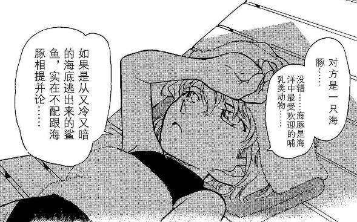

一楼喂百度

这里小哀对小兰的心理我认为不只是对于兰这个具体的人的。如果小哀拥有正常的生活，现在她的生活并不是像和小哀朝夕相处的步美，而是像兰/园子一样的女高中生（在不跳级的情况下）。
如果只是对兰，我觉得她根本不会去比较，她的立场从来都不是**的。
她所自卑的是自己的身世。
小柯对兰的身材脸红，哀难道没有女高中生的曼妙青春吗？志保可是在鲁邦三世的番外中说自己可是很有料的。但是小哀不能变回去，只要黑衣组织存在，她就不能做宫野志保。
根本不能以自己的身份走在阳光下。
不能和闺蜜分享心事——虽然步美很好，但是步美和小哀的心理年龄完全不在一个层面，而且小哀有太多不能和步美说的东西了，而不能说的这些黑暗又进一步折磨着哀，无处分享。
阿笠博士和柯南对她很好，但是他们两个都是男性，和女性之间的关怀又不一样。而且她为了防止柯南冲动，依然要对他有所保留。
她也没有钱，她原来的账户如果有钱的话也是不能用的，只能靠博士抚养，即便她能帮他做发明获取额外收入，但是如果没有阿笠博士，她根本没法自己去打工获得收入，柯南能住在毛利家这么久也是因为有希子给了毛利大叔大笔抚养费，而灰原并没有亲人能提供这个费用（赤楼梦当时毫无苗头）。
看到小兰，特别是看到柯南对她的好感，这些平时隐藏在少女冷淡中的悲伤和孤独一时间被放大了，哀大概觉得自己连喜欢一个人的资格都没有。这种绝望可能才是让小哀独自在岸上的原因，她可能很想姐姐，很想妈妈，但是姐姐和妈妈都不在了。她连哭都没法哭，一方面她很坚强，另一方面，那个时候她身边有谁能包容她的眼泪呢？被爱的人才有资格哭。她只能尽自己努力帮助阿笠博士，提供线索给柯南，研究解药，以图一个栖身之地。
在这里我又想到黑衣组织再会篇了，当时和琴酒交锋后，小哀想要第二天就离开。可是她一个负伤的小女孩，她能去哪里？她当时的身体状态离开，说不定第二天就恶化甚至死掉了。可是她做出选择的时候毫不犹豫。
小哀真的是太惨了……我觉得灰言灰语时期的小哀是有厌世和自毁倾向的，因为世界上已经没有她可留恋的亲人了，甚至明美都是为了带她脱离组织才被杀的，她在世上已经没有什么深刻的羁绊能支撑她活下去了。这样的小哀真是格外的坚强了。为了不拖累这些对她好的人，她觉得死了才能保护大家，也是她的解脱。正因如此，她可以面对死亡和琴酒谈笑风生。在公交车上不想下车。
而柯南一次次去救她。如果小哀死了，柯南就可以用柯南的身份远离工藤新一的杀身之祸了，他甚至不用主动去灭口，她都决意赴死，连道德包袱都无需有。而这样一个人选择让她活下去。
除了一次次以命相救，他的邻居阿笠博士把她当闺女，他妈妈宁可自己危险也要保护她，给她做饭，是第一个她能作为小女孩相处的女性长辈，如友如姐如母；他全家把她视为自己人；他作为柯导保下了大表哥，让她多了一个保护者和投喂者……他为了她的不快而出谋划策，为了开导她给她讲比护的故事，让她喜欢上了比护和足球，担心她的安危彻夜守护，为了她挂件丢了不辞劳苦，给她找妈妈的磁带，给她找姐姐的时光胶囊……让她像一个真正的小女孩一样笑着。
她怎么可能不爱上他呢？
希望小哀会继续幸福下去！~~~~~
自己挽一下
有理
2023-10-19 00:42 | 熙熙兔:谢谢~
柯南对哀好，前期是因为新一善良。但是现在命运共同体之间可不只是善良能概括的。
2023-10-18 21:48 | 熙熙兔:是的，我主要是哀粉，但是入柯哀就是因为柯南对小哀太在乎了，一个男孩子为女孩子奋不顾身是可以理解的，但是让爸妈一起冒着风险保护一个女孩子，这都不是爱的话我真不知道怎么解释了
他是为了救她才站在这里的！他是为了救她才战斗的！不是为了别人！什么黑暗的过去，什么要挟的工作！什么只要有样本和资料，其他人也可以研发解药！什么做的药让他变小！这些鸡毛蒜皮的小事他根本不在乎！在这个世界上，她只有唯一一个！为什么你（SR）连这么简单的事情也不明白！🤔
一个人，不会因为所在位置的不同，灵魂就因此受到玷污。
可恶，是啊，既然他不想陪她下地狱，那么只有把她从地狱里拉上来了吧！😏
打出魔禁卡组喵
一个人，不会因为所在位置的不同，灵魂就因此受到玷污。
可恶，是啊，既然他不想陪她下地狱，那么只有把她从地狱里拉上来了吧！😏
打出魔禁卡组喵
2023-10-19 00:42 | 熙熙兔:哈哈哈哈哈是的，否则他和小兰十岁年龄差也不是真不能在一起，爸妈也认他，还有阿笠博士和平次这样知根知底的好朋友，没必要冒这么大的风险非要变回去
就是有些emo
2023-10-19 00:40 | 熙熙兔:对，那一瞬间兰的出现放大了这种情绪
她努力做解药，为了归还一部分属于工藤新一的人生。他许下会保护你的诺言，是为了她成为快乐的小学生。不同的努力方向，但是互相救赎
2023-11-26 09:32 | 熙熙兔:所以柯哀是仙品！！！